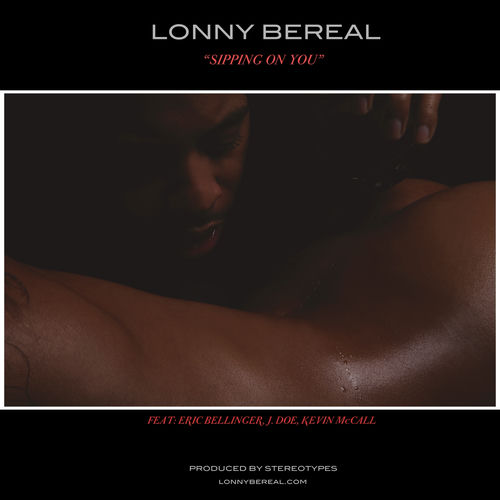

Lonny Bereal
Joseph Alonzo "Lonny" Bereal Jr. is an American singer, songwriter, and record producer. His 2011 debut single, "Favor" was a duet with singer Kelly Rowland, for whom he was originally a backing vocalist. Despite the song's commercial underperformance, Bereal shifted focus onto songwriting work for other R&B acts including Ariana Grande, Keri Hilson, Tank, Omarion, Jamie Foxx and Chris Brown—the latter of whom most extensively since 2007. In 2018, he executive produced Snoop Dogg's gospel album Bible of Love, released in March of that year. He was also a member of Busta Rhymes' Flipmode Squad.
Complete Discography & Tracklists (6)